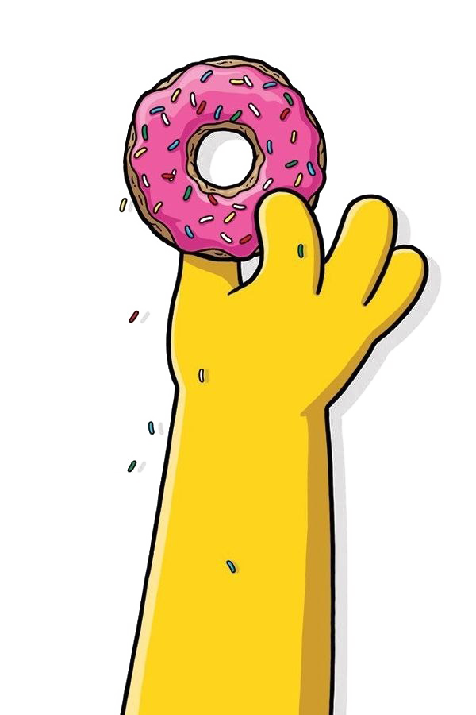

The Simpson's Donut
Famously known as the "Lard Lad Donut," is an iconic oversized treat from "The Simpsons." It features pink frosting, multicolored sprinkles, and a bite taken out of the corner, representing Homer Simpson's love for sweet indulgence.

Ingredients
- 2 cups all-purpose flour
- 1/2 cup granulated sugar
- 1/4 cup whole milk
- 1/4 cup sour cream
- 2 large eggs
- 1/4 cup unsalted butter, melted
- 1 teaspoon vanilla extract
- 1 tablespoon baking powder
- 1/2 teaspoon salt
- Pink frosting (store-bought or homemade)
- Multicolored sprinkles
Steps
- Preheat your oven to 350°F (175°C). Grease a standard-sized donut pan with non-stick cooking spray.
- In a large mixing bowl, whisk together the flour, granulated sugar, baking powder, and salt.
- In a separate bowl, whisk together the milk, sour cream, melted butter, eggs, and vanilla extract until well combined.
- Gradually add the wet ingredients to the dry ingredients, stirring until just combined.
- Spoon the batter into a piping bag or a large plastic zip-top bag with a corner snipped off for easier filling.
- Pipe the batter into the donut pan, filling each cavity about two-thirds full.
- Bake the donuts in the preheated oven for 12-15 minutes or until a toothpick comes out clean.
- Allow the donuts to cool in the pan for a few minutes before transferring them to a wire rack to cool completely.
- Spread pink frosting on top of each donut and immediately sprinkle multicolored sprinkles over the frosting.
- Let the frosting set for a few minutes, and your Simpsons donuts are ready to be enjoyed!